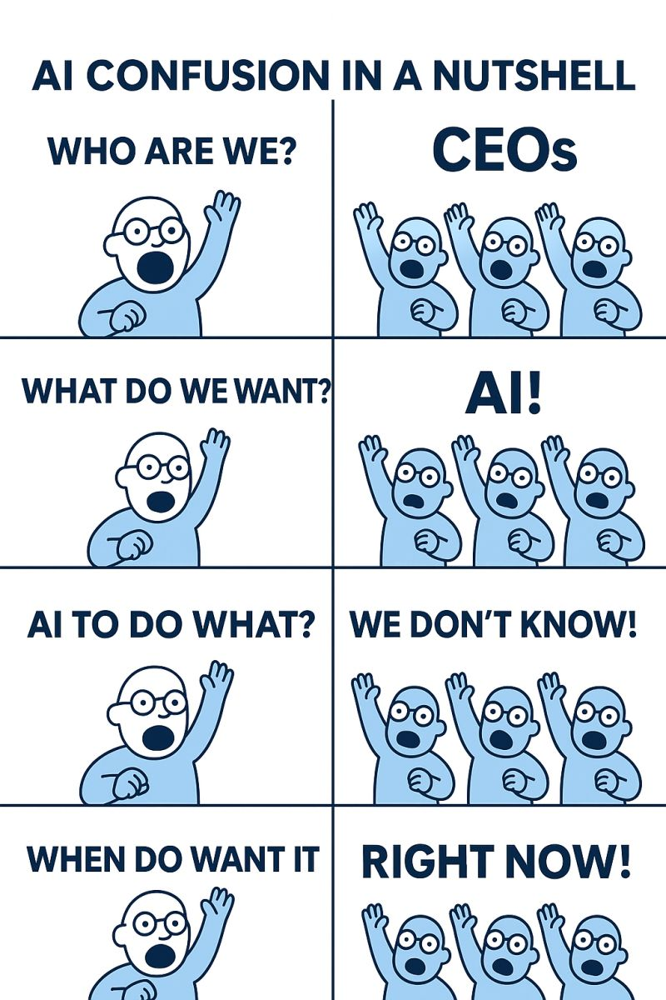

The most common mistake professionals make with AI is starting from the tool instead of starting from the problem. Adopting a platform and then looking for something to do with it is backwards, and it is the reason most early AI investments feel underwhelming.

Not a vague category. The specific thing. "I spend 3 hours every Monday reformatting client reports" or "I rewrite the same follow-up email 20 times a week with slight variations."
If you could hand it to an assistant with a checklist and they could execute it, AI can probably handle it. If it requires your judgment, expertise, or a relationship, it probably cannot.
This is the real question. If the answer is "serve two more clients" or "finally get ahead on business development," that is the ROI case for adopting AI on that task.
Pick the task, pick a tool, set a clear goal. Evaluate honestly after a month. Did it actually save time? Was the output reliable enough to trust? Then expand or pivot.